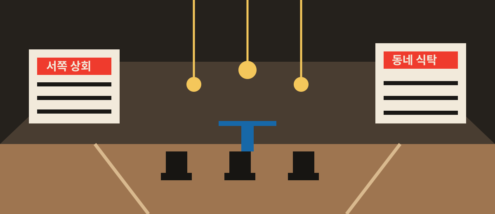

오늘의 편집 데스크 / Desk edition 07제작 시각 18:40
ONE SOURCE낮의 장사가 끝난 자리에서, 동네의 두 번째 시간이 시작된다.
오늘의 대표 소재
시장은
시장은
저녁부터
다시 열린다
오래된 시장의 빈 통로가 작은 공연장과 식탁, 동네 영화관으로 바뀌는 여섯 시간을 따라간다.

자료 메모
상인 인터뷰 4건
현장 관찰 17:30–22:10
2026-07-24 합성 취재 기록
상인 인터뷰 4건
현장 관찰 17:30–22:10
2026-07-24 합성 취재 기록